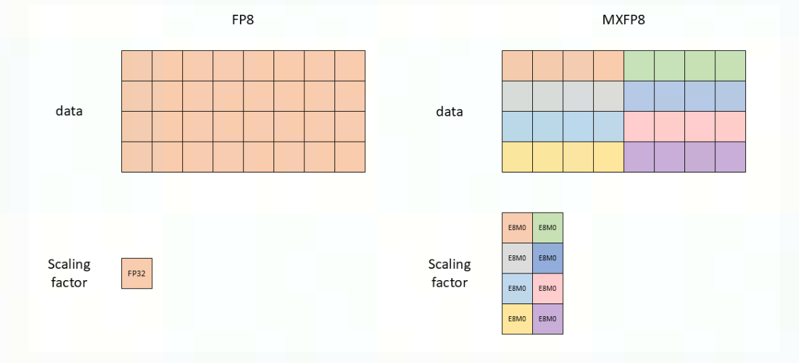
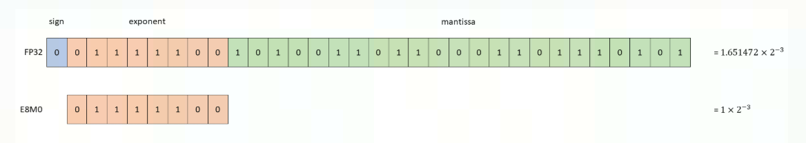

TransformerEngine加速库
NVIDIA TransformerEngine是一个专注于优化Transformer模型训练和推理性能的高效工具库。该项目通过提供FP8混合精度支持、优化的注意力机制实现以及分布式训练集成等功能，显著提升了大规模语言模型的训练效率。
TransformerEngine针对Transformer里面的Kernel进行了重写, 以支持FP8特征, 扩展了Pytorch的功能.
使用方式也是比较简单，使用该拓展额外包的一层 Module 来搭建网络，即可，最后再包一层混合精度训练作用域：
1 | |
在混合精度训练的情况下, 因为FP16本身的数值范围还是足够大的, 在AMP(Automatic Mixed Prescision)下, 只在最后一个Loss做一个scaling, 这个步骤足以保证整个模型在运算过程中不会产生溢出.
而FP8相比FP16减少了更多有效位, 因此不能简单复用FP16下的策略, 需要给每个FP8 Tensor单独设置一个合适的scale factor. Transformer Engine需要动态地对输入范围进行调整, 如图所示:


具体到每一个算子实现动态范围调整的原理很简单, 通过记录历史的abs max值, 来去调整最终缩放的范围.
其主要的 Kernel 实现都放在了 common 目录下，我们以 gelu 这个 kernel 为例，最终它会调用到 vectorized_pointwise.h这个文件，我们主要看 unary_kernel
unary_kernel
这个核函数模板跟常规的 elementwise 向量化模板是类似的。
首先会让每个线程获取到 scale 值
1 | |
其中在循环里，线程会不断更新他运算结果的最大值，并且最终运算结果要乘上 scale 值：
1 | |
当 Kernel 主体运算完毕后，再也 warp 为单位做一个 reduce_max，获取到线程束内的最大值，再通过 atomicMax 原子操作，不断更新全局最大值：
1 | |
其他 layernorm 等 Kernel 也是诸如类似的逻辑，这里就不再展开了.
Python API
DelayedScaling
从前面的示例代码我们可以看到一个比较重要的 API 是DelayedScaling，我们可以根据官方文档查看各个参数含义：
- margin 计算 scale 的偏移量
- interval 控制计算 scale factor 的频率
- fp8_format 使用 FP8 的格式，FP8 有 E4M3 和 E5M2，但是现在不支持纯 E5M2 的格式训练
- amax_history_len 记录 abs maxval 的历史窗口大小
- amax_compute_algo 在窗口里选择 absmax 的算法，'max’则是选择历史窗口里最大值，'most_recent’则是选择近期的值，当然你也可以传一个自定义的函数
相关代码为：
1 | |
- scaling_factor_compute_algo 计算 scale factor 的算法
1 | |
- override_linear_precision 由 3 个 bool 值，分别控制 fprop 前向，dgrad，wgrad 三个矩阵乘是否用更高的精度来计算，默认都为 False
TransformerEngineBaseModule
相关的 Kernel 除了要完成自己的计算任务，也得实时维护 amax 这些值，因此也需要对应修改 nn.Module，这里 TransformerEngine 继承了 nn.Module，并且增加了一些 buffer 维护的机制，这些 buffer 用于存储动态 scale 的信息：
1 | |
而相关 Module 如 LayerNormMLP 继承该 Module，并且传入 fp8_meta 信息更新：
1 | |
FP8 datatype

FP8数据格式有两种, 分别是E4M3和E5M2:
- E4M3有1位符号位, 4位指数位, 3位尾数位, 可以存储的范围是+/-448和nan
- E5M2有1位符号位, 5位指数位, 2位尾数位, 可以存储的范围是+/-57344,+/-inf和nan
通常在NN网络中, 前向的激活和权重需要更高的精度, 所以使用E4M3, 而在反向传播过程中, 网络中流动的梯度通常对精度损失不那么敏感, 但却需要更高的动态范围, 因此, 反向使用E5M2来存储是最佳选择.
H100的Tensor Core支持这些类型的任意组合作为输入, 使得我们能够为每种张量选择其中最适合的精度进行存储.
FP16混合精度训练
用于FP16训练的混合精度方案包含两个组成部分：选择哪些运算应以FP16执行，以及动态损失缩放:
- 选择哪些运算以FP16精度执行，需要分析该运算的输出相对于其输入的数值行为，以及预期的性能增益。这使得我们可以将诸如矩阵乘法、卷积和归一化层等运算构成了神经网络计算量的大头, 它们对数值误差的容忍度较高, 并且在FP16下有巨大的性能提升, 标记为“安全的”（适合FP16,），而将像求范数（norm）或指数（exp）这类运算标记为需要高精度的操作, 这些运算必须保持在FP32下以确保精度。
- 动态损失缩放能够避免在训练过程中梯度的上溢和下溢。在反向传播中计算出的梯度值可能非常小。FP16的数值表示范围有限，如果梯度值小到超出了FP16能表示的最小正数，它就会被“下溢”成0。一旦梯度变为0，模型的权重就不会更新，训练就停滞了。对此, 在反向传播之前，将计算出的损失（Loss）乘以一个很大的缩放因子（例如1024）。根据链式法则，所有的梯度也会被同等放大1024倍。这样，原本那些可能因太小而下溢的梯度，现在被放大了，就能安全地落在FP16的表示范围内。在优化器更新权重之前，再将梯度除以相同的缩放因子（1024），将其还原回真实的数值。这个缩放因子不是固定的。训练框架会自动监控梯度是否溢出：如果梯度在多次迭代中都没有溢出，就尝试增大缩放因子以保留更小的梯度细节；如果发生了溢出（梯度值被放大后超出了FP16的最大范围），就减小缩放因子(缩放因子往往使用2的幂次方的移位操作, 不会引入任何计算误差)。

FP8混合精度训练
尽管FP8类型提供的动态范围足以存储任一特定的激活值或梯度，但却不足以同时容纳所有这些值。这使得在FP16训练中行之有效的单一损失缩放因子策略，在FP8训练中变得不可行，因而需要为每个FP8张量使用各自不同的缩放因子。
为给定的FP8张量选择合适的缩放因子，存在多种策略：
- 即时缩放 (**just-in-time scaling)：该策略根据当前正在生成的张量的绝对值最大值 (amax)** 来选择缩放因子。在实践中，这是不可行的，因为它需要对数据进行多次处理——算子先以更高精度生成并写出输出，然后找到该输出的绝对值最大值，最后将这个最大值应用到所有数值上以获得最终的FP8输出。这会产生大量额外开销，严重削弱了使用FP8带来的收益。
- 延迟缩放 (delayed scaling)：该策略根据在过去若干次迭代中观察到的绝对值最大值来选择缩放因子。这能够完全发挥FP8的计算性能，但要求将最大值的历史记录作为FP8算子的额外参数进行存储。
MXFP8
MXFP8是NVIDIA在Blackwell架构中引入的一种增强版FP8格式。它的核心目标是解决传统FP8在保证数值精度和处理大动态范围数据时的矛盾，通过一种更精细化的块缩放（Block Scaling）机制，实现了更高的精度和效率。
其思想类似于QLoRA: 也就是一个Tensor我们划分为不同的块, 每个块使用自己的scale, 这样会让总体的数值往E4M3的范围靠拢, 但是如果Block数量太多, scale还是采用原始FP8下的FP32格式来存储, 也会占很大的空间, 所以MXFP8的每一块的缩放因子都采用E8M0格式来存储



分块量化会带来一个问题, 反向计算梯度过程中, 需要对原始的输入矩阵进行转置, 原先按照"行主序"生成的量化scale, 转置之后, 共享同一个缩放因子的连续块就会被打散到不同的新块里面, 原先的scale就不适用了, 采用的常规的方法是: 要想得到一个有效的、转置后的MXFP8矩阵，只能先将原始MXFP8数据反量化回高精度格式（如FP32），对高精度数据进行转置，然后再重新量化成新的MXFP8格式（生成新的块和新的缩放因子）。
这个“反量化 -> 重新量化”的过程被称为双重量化 (double quantization)。每一次量化都可能引入微小的误差，进行两次这样的操作会累积误差，导致明显的精度损失，这是在训练中极力要避免的。
Transformer Engine采用的是从源头避免重复量化:
下图中的Cast模块在前向过程中会从源头计算两个MXFP8的版本:
- 原始的非转置的MXFP8格式, 用于前向
- 转置后的MXFP8格式, 不会被立刻使用, 而是被暂存起来, 直接向下传递给反向传播阶段
反向的输入梯度也会经过Cast模块生成两个MXFP8版本.

FP8操作使用fp8_autocast的上下文管理器自动进行, 其中的自动化操作包括:
- 所有 FP8 安全操作的输入均转换为 FP8
- Amax 历史记录已更新
- 计算新的缩放因子并准备进行下一次迭代
当模型在fp8_autocast区域内运行时，尤其是在多 GPU 训练中，需要进行一些通信以同步缩放因子和 amax 历史记录。为了在不增加太多开销的情况下执行该通信，fp8_autocast上下文管理器会在执行通信之前聚合张量
由于这种聚合，反向调用需要在fp8_autocast上下文管理器之外进行.
1 | |
如果 loss.backward() 在 with 块内部，那么反向传播会先开始。但此时，用于反向传播的缩放因子等信息可能还没有在各个GPU之间同步，这会导致计算错误。
因此，必须先退出 with 块，让它完成所有必要的聚合和通信(fp8_autocast被设计为在退出with时, 自动触发"打包聚合和通信"的操作)，确保所有GPU都拿到了最新的、同步好的缩放因子。然后，再执行 loss.backward()，此时的计算才是安全和正确的。
注: FP8操作下的和FP32下的输出数值不相等, 并不是量化带来的误差, 量化只是乘以一个数, 再除以一个数, 并不会带来误差, 是在计算开始前，将高精度的FP32输入（包括权重）转换为低精度FP8时，就已经发生了不可逆的精度损失.